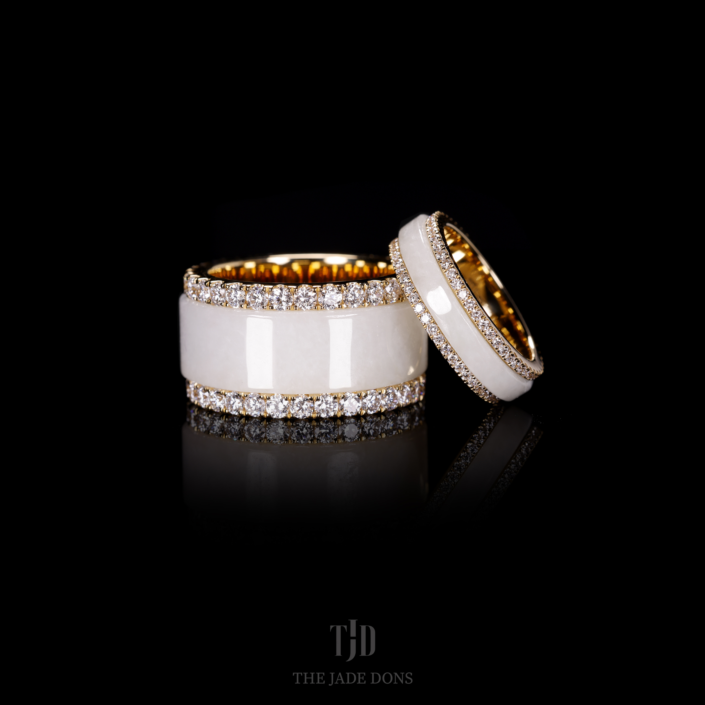

Work I Specialize In
I specialize in custom, bespoke jewelry—working with 10–24k gold and both natural and lab-grown diamonds. My main specialty is hand-carved Grade A jadeite. Designs are created through a collaborative process: we refine your concept, curate stones and metals to fit your vision, and craft a one-of-a-kind piece that’s custom tailored to you. Get it done right by the Dons.
From sketch and CAD to wax/resin, casting, setting, and final polish—every step is tightly quality-checked. Each design is specifically made and carefully curated to reflect your story and style.
Rings
Custom engagement, signet, and statement rings—built for daily wear and lasting shine.
Custom Jewelry
Pendants, earrings, and unique commissions in 10–24k gold with natural or lab diamonds.

Chains
Hand-finished chains and bespoke lengths with secure clasps and durable construction.
By the Numbers
2
Years in Business
100+
Custom Projects
100+
Private Clients